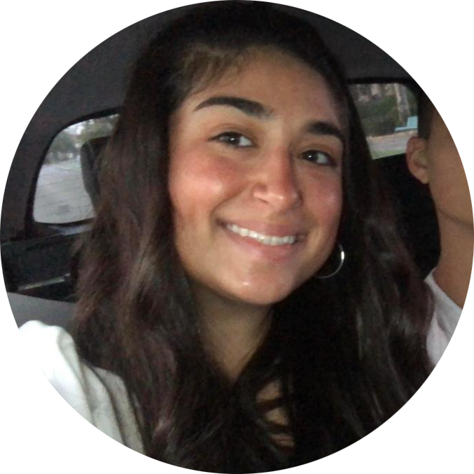

אפיינו, עיצבו, כתבו, ציירו, צבעו, פיתחו, הנגישו ושוב ציירו:
אביב ספקטור
סתיו עיני
לירז כהן
ויולה עדן לנצ'אנו
האתר פותח במסגרת פרויקט משולב לקורסים בשנה א', תשפ"א:
- אפיון ממשק וחווית משתמש
- עיצוב ממשק משתמש
- פיתוח אתרי אינטרנט
- הנגשת אתרי אינטרנט
האתר אופיין ועוצב לפי עקרונות של "עיצוב ממשק" ופותח ב- HTML5 ו- CSS3 תוך התחשבות בעקרונות "נגישות אתרים" תחת עמידה בסטנדרט AA.
האתר כולל תוצר אינטראקטיבי לייצוג ידע המאופיין ומפותח בקורסים "ארגון וייצוג ידע" ו"מבוא לתכנות אינטראקציה ואנימציה".
להלן המסכים שפותחו באתר:
תודות
באתר יש שימוש בתכנים מקוריים המוגנים על ידי זכויות יוצרים ואושרו לשימוש על ידי בעלי הזכויות. כלל האייקונים עוצבו ע"י צוות האתר וגם הם כפופים לזכויות יוצרים.
הפקולטה לטכנולוגיות למידה